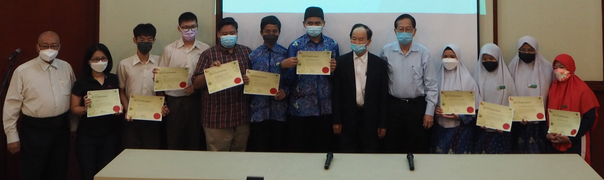

“同一屋檐下”马来西亚日庆典
促进师生跨校体验族群交融
参加笔友交流计划的华文独中和宗教学校的学生与教师和嘉宾合照。
为庆祝马来西亚日，董总以“同一屋檐下”马来西亚日庆典为主题，举办征文、摄影比赛，以及“我的笔友交流计划”等系列活动，希望藉此展现马来西亚多元文化面貌，提醒社会大众维护多元文化价值观，以及了解和包容文化差异的重要性。
马来西亚日庆典于2022年9月24日假隆雪华堂举行。大会邀得雪州行政议员许来贤前来致词，创作歌手Francis Wolf现场表演，“我的笔友交流计划”师生分享心得，以及华文独中多元文化活动补助计划的录取学校的学生作成果汇报。
董总主席陈大锦开幕时呼吁各政治联盟摒弃单元旧思维，应当肯认多元文化的事实，在第15届全国大选来临前承诺研拟多元文化政策，按照多元文化原则来修订国家文化政策，将各族文化纳入其中，唯有如此，我国才有望走出族群政治的困局。许来贤在致词时也肯定董总多年来积极推动多元文化，促进华文独中与其他源流学校族群交流的努力。
约有70位来自全国各地师生和公众人士出席本活动。其他嘉宾有董总署理主席陈友信、副主席杨应俊等。参与学校包括巴生光华独中、吉隆坡中华独中、吉隆坡尊孔独中、坤成中学、马六甲培风中学、亚庇建国中学、槟城槟华女中和Sekolah Menengah Islam (SMI) Hidayah Johor Bahru。
当天亦公布了马来西亚日摄影与征文比赛的获奖名单，得奖者包括在籍中学生、大专青年和外籍移工。
马来西亚日摄影比赛成绩
首奖：陆紫琳
二奖：Lim Chen Loong
三奖：钟佳璟
优秀奖：张云峰、陆紫瑜、黄祯翔、How Zhen Kee、李芯仪、卢紫莹、黄俊邦、何嘉雯、戴嘉缘、刘冠熹
佳作奖：刘恩彤、Leong Hui Yuan、周恩伊、严绍瑄、吴彩薇、李韦霖、叶恺森、钟欣泽、Nicky Ng Shu Hao、Lee Yi Hong、许悦、Putri Illusa Binti Abdul Nasir、叶子瑄、刘冠宏、林伦毅、李慈悢、陈建皓、杨梽轩、Yusuf Imran Anwar、伍芓谕
“我的跨文化经验”征文比赛成绩
中文组（姓名／题目，不分名次）：
- 郭悦晴／我的跨文化经验
- 刘诒心／玫瑰糖浆水仙草
- 杨雯琪／当小学生走入峇峇娘惹的缤纷世界
- 庄素莹／我的跨文化经验
马来文组（姓名／题目，不分名次）：
- 颜俊鸿／Silang budaya mendatangkan kepelbagaian mencambah keserian
- Muhammad Azri Hisyam Bin Farizan／Kepelbagaian Budaya Menerusi Pendidikan
- Amieyra Daniea Binti Asmawi／Perpaduan Kunci Kejayaan
英文组（姓名／题目，不分名次）：
- Rozy Faiz／Green Chicken and Glutinous Rice
- Wan Dalili Dayan／Close Together With the Malaysian Dream
- Vanessa Maria A/P Sinnappen／Thankful For The Challenge
- Joan Santillan Amurao／Expatriation and Adaptation
来自柔佛州宗教学校的学生Safiyyah Zahra和Ahmad Hafifuddin表示“我的笔友交流计划”十分可贵，让他们得以结识友族同胞，其顾问老师Mohammad Asyraf也期盼此活动能常年举办，让更多学生体验族群交融。光华独中高中生赖文祚则感谢能透过本活动学习不同的语言和文化。
大会在当天也安排了自由电影网络（Freedom Film Network）举行一场原住民电影分享与交流会，会后由青年Wak Masnah和Maranisnie讲述半岛原住民的权益困境。